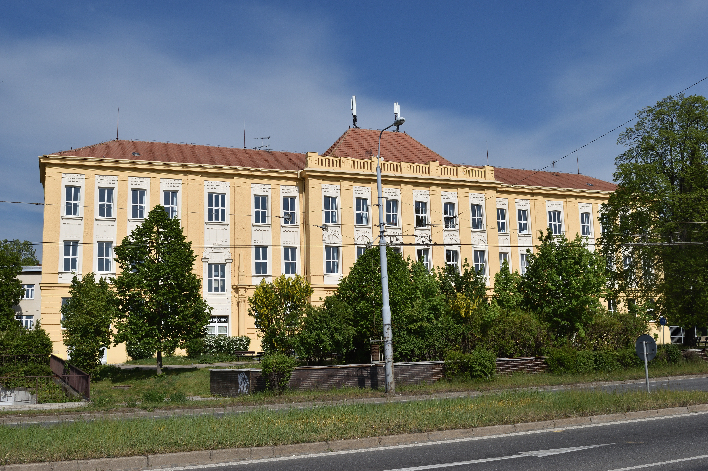
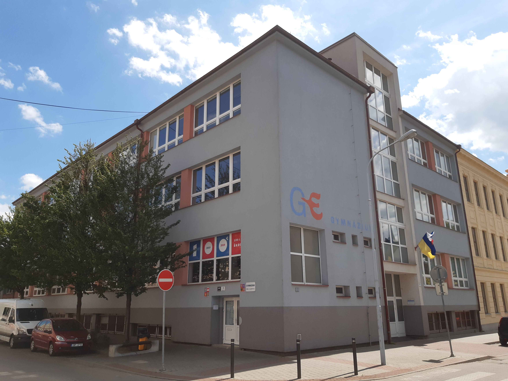
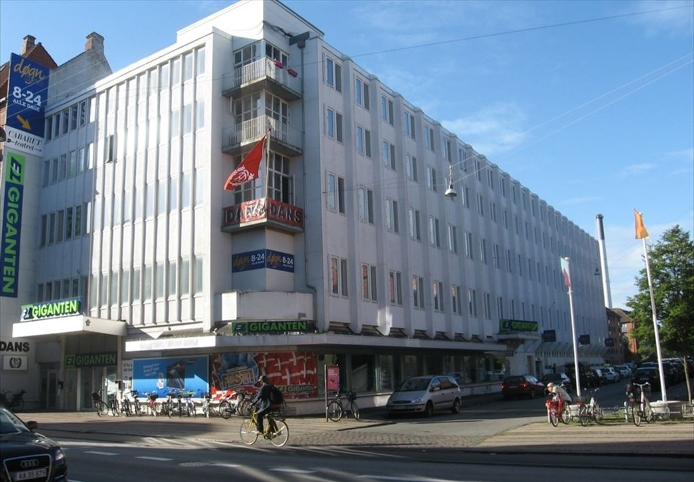
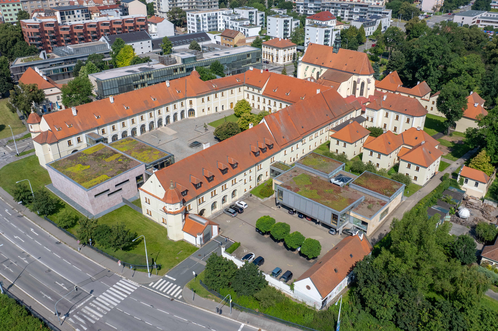

Na základní školu Gajdošovu 3 jsem chodila v letech 2010–2019.
„Gajdoška“ je známá svou Montessori větví, která tvoří přibližně jednu třetinu celé školy.
Montessori je vzdělávání založené na pedagogice Marie Montessori, kde je kladen důraz na individualizované
učení, smyslové vnímání a přirozený rozvoj dítěte.
Za sebe, jakožto absolventku, mohu říct, že největší přínos vidím v projektech, se kterými
jsem se v Montessori třídách často setkávala, a také v kreativitě kantorů obohacovat výuku.

Gymnázium Elgartova jsem navštěvovala v letech 2019-2023 a úspěšně jsem odmaturovala z pěti
předmětů. Co mohu s jistotou říct, je, že Elgartku rozhodně doporučuji - a kdybych měla znovu
volit v roce 2019, zvolila bych stejně. Elgartka pro mě byla výjimečná tím, že jsem se kromě studia mohla
soustředit i na sebe, a škola mě v tom podporovala. Navíc svými menšími rozměry umožňuje nastavit osobnější, téměř rodinné prostředí.
A i přesto, že během mého studia udeřil covid-19, byly ty čtyři roky naprosto
jedinečné a určitě hrály klíčovou roli v tom, kým jsem dnes.

International Dance Academy, zkráceně I.D.A., byla tak trochu impulzivní a náhlé rozhodnutí - snaha
vymanit se z předpokládané budoucnosti očekávané společností a moje nejistota, zda opravdu chci jít
na vysokou školu. Zároveň to byla i touha se rozvíjet a vyzkoušet si dělat naplno něco, co je mi tak blízké - tanec.
O I.D.A. jako takové se více zmiňuji v sekci Abroad. Po tomto mém roce v zahraničí bych opravdu
moc doporučila všem, kdo tu možnost mají, aby ji využili a
nebáli se. Život je kratší, než se zdá - viz odkaz na „tabulku života“.

Na FIT jsem nastoupila v roce 2024 a vůbec netuším, kdy se mi podaří toto studium dokončit - a jestli vůbec…
FIT rozhodně splnil veškerá má očekávání, ba je i předčil. Škola si skutečně zakládá na tom, aby si udržela svou skvělou pověst, což
se samozřejmě odráží i v náročnosti studia. Velmi mile mě překvapil přístup všech vyučujících, se kterými jsem se zatím setkala - obzvlášť
na cvičeních. Kantoři se opravdu snaží studentům pomoci a látku jim vysvětlit do takové míry, že mě občas mrzí, že nemám víc dotazů. FIT
je navíc i jako fakulta krásná - má velmi příjemnou atmosféru. Všechny tyto klady jsou ale vyváženy vysokou obtížností a nutností věnovat
studiu téměř veškerý volný čas. Musím přiznat, že je to jedna z věcí, která mě občas nutí přemýšlet o odchodu. Nicméně - prozatím, dokud
mě nevyhodí, zůstávám. :)